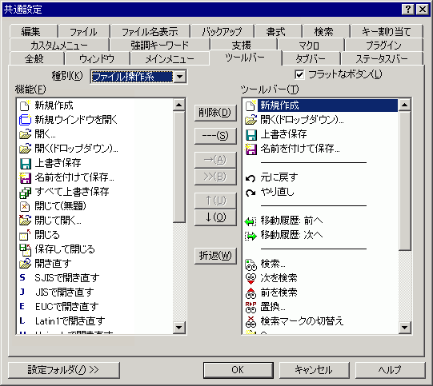

共通設定 『ツールバー』プロパティ
『全般』
『ウィンドウ』
『メインメニュー』
『ツールバー』
『タブバー』
『ステータスバー』
『編集』
『ファイル』
『ファイル名表示』
『バックアップ』
『書式』
『検索』
『キー割り当て』
『カスタムメニュー』
『強調キーワード』
『支援』
『マクロ』
『プラグイン』

右枠内のリストが実際のツールボタン一覧です。
左枠上部の「種別」を選択し、枠内から機能を選択して適当なところへ挿入します。
右側の一覧のアイテムを削除したり、移動させることができます。
共通設定 『カスタムメニュー』を参照してください。
□フラットなボタン
ツールバーのボタンをフラットにします。
[削除]ボタン
ツールバーから選択した機能を削除します。
[---]ボタン
ツールバーにセパレータを挿入します。
[→]ボタン
「機能」で選択している項目をツールバーに追加します。
[>>]ボタン
ツールバーで選択している機能「機能」で選択している項目をツールバーの最後に追加します。
[↑]ボタン
「機能」で選択している項目をの順序を上へ移動します。
[↓]ボタン
「機能」で選択している項目をの順序を下へ移動します。
[折返]ボタン
ボタンを押すと、"――ツールバー折返――"が追加されます。追加された位置ででツールバーを折り返して表示します。(sakura:1.5.5.0以降)
[設定フォルダ]
設定フォルダボタンは、ユーザー別設定を行っている場合のみ表示されます。
 ヒント
ヒント
Windows XPで画面のデザインがWindows XP スタイルの場合にはこのチェックボックスの状態にかかわらずフラットになります。